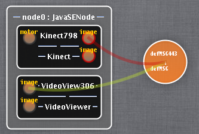

Communication concerns are often mixed with business code
Modules relationships (e.g bindings) can lead to implicit complex distribution semantics,
especially in distributed system. (transactionality, distribution, ...)
There is a strong need to provide a Connector/Medium/Channel abstraction to:
Extract communication semantics from component
Explicit complex distribution scenario
Introducing Kevoree Channel : Communication semantics encapsulation
Channel role:
Extract the communication semantics from component
A ChannelType defines a message distribution semantics, composed by :
Message exchange pattern
Lower and Upper binding bounds
Lower and Upper distribution bounds
Kevoree Channel fragment
Channel Instance : deployed by fragments
One fragment on each node using channel, FIFO semantics
ChannelFragment communicates with Local bound ports
ChannelFragment is not allowed to communicate with remote port
ChannelFragment communicates each others
Kevoree Concurrency model
Concurrency managment is difficult for component developers
Kevoree concurrency model aims at declaring concurrency properties on ports
Kevoree embeds Actor semantics to protect port from concurrent access
Default behavior: inject an actor for each port
Advanced feature like @NonConcurrency(port1,port2) can inject an actor to protect several ports
Distributed model propagation algorithm (& reasoner ...)
Gossiper, Paxos, VectorClock
Model multi-criteria optimization
Genetic algorithm
Kevoree : M@R dissemination
Group entities & propagation strategies
Distributed adaptive systems need reflexion
but direct access on reflexive layer is problematic in several distributed architectures
Sporadic nodes: direct reflexive access are not always reachable
Heterogenous nodes: direct access is not always provided by restrictive runtime
Embedded nodes: direct access can be an issue for the battery life
Offline adaptation is required !
Heterogenous dissemination strategy
Distributed system usually organized in clusters (group of nodes)
Considering a cluster of nodes (A,B,C) sharing a configuration model :
Sporadic context : A can update B without synchronizing C
Cluster context : A must synchronize B & C in the same logical time
Opportunistic nodes : A can synchronize B or C depend of previous configurations
Total order, Partial order: common challenges in distributed softwares
Dissemination strategy heterogeneity
Complex architectures, especially on field sporadic usage, lead to composition of dissemination strategies
A & B are mobile nodes, injected group will use partial order
S1 & S2 are cluster nodes, injected group will use total order
A partial order group is injected between B & S1.
M@R Dissemination scope
Cluster also ensures a strong synchronization of members. The scope of this synchronization depends is
defined by the group
Considering two group of nodes: (A,B) & (B,C)
A & B share a M@R, B & C share another M@R
A & C don't share anything, cluster defines synchronized elements
A & C can be desynchronized if cluster 2 ensures a partial order
Architectural abstraction needed !
Claim :
To address all these problems, we need to provide an abstraction to manipulate and compose
dissemination strategies
Introducing Kevoree Groups
Definition
Entity dedicated to M@R propagation and synchronization of linked nodes.
Follow Kevoree type/instance pattern
Encapsulate synchronization semantics
Host M@R dissemination protocol
In charge of selecting synchronized elements (scope definition)
In charge of ensuring security of update (i.e control policy access)
Group Fragments
Like Channels, Group type definition host distributed algorithms.
Group instances are splitted into fragments.
Fragment instances are dispatched to every linked node (Stub/skeletton pattern)
Group Fragments
Group instances are mandatory to interact with Nodes
Two main types of implementation, derived on different protocol :
Called before a model update to allow (or not) a reconfiguration (i.e Consensus approach)
Called after a model update to propagate a new model (i.e Gossiper approach)
Group Implementations
Most used implementations
RestGroup : Basic listener for small clusters
GossiperNetty : Gossiper propagation on IP networks with vector clock failure
reconciliation(UDP/TDP)
JPaxosGroup : Consensus implementation (i.e KevoreeKloud grid, work in
progress)
Gossiper Cluster Experiment
A quantitative and qualitative experimental evaluation has been done on Gossiper+VectorClock group
implementation.
Experimental setup ~66 computational nodes
Connected through a local area network at 100MB/s
Topology model is randomly generated
Global time axis logger for metrics mesurement
Gossiper Cluster Experiment
Evaluated questions:
Influence of the communication strategy on M@Rpropagation delay ?
Does the algorithm detect concurrent models updates ?
Does the algorithm handle reconciliation correctly ?
Does a high rate of node link failure prevent the propagation of M@R ?
How does it impact propagation delays ?
Gossiper Protocol
Variation points :
Pull / Push-Pull
2 step / 1 step vector clock exchange
Gossiper Protocol
Variation points :
Pull / Push-Pull
2 step / 1 step vector clock exchange
Propagation delay versus network load
Propagation delay versus network load 2
Concurrency reconfiguration reconciliation
Node link failure impact ?
Gossiper Experiment conclusion
Lesson learned and conclusion :
Vector Clock size has serious impact on performance
must manage scalability using several hierarchical groups
Distributed reconfiguration capability is usable
Inverted communication and propagation delay reduce the impact for sporadic network
Hybrid approach seems to be suitable for non reliable network
Kevoree : Planning
How to successfully update a configuration
What is Planning ?
The process to prepare the execution of an adaptation
Selecting concrete actions
According to the adaptation to applied (model comparison)
In many case, mixed with analysis
Scheduling them
According to relations between actions (e.g install before start)
Why we need Planning ?
Why we need Planning ?
To ensure system consistency
Between dependent components
For instance on starts and stops

How to do Planning ?
The basic approach: static action ordering
execute sequentially all addThirdPartiesexecute sequentially all addDeployUnitsexecute sequentially all AddInstancesexecute sequentially all startInstances
Limitations
Efficiency
Dependencies between actions of the same type
How to do Planning ?
The basic approach: static action ordering
Possible failure of the startInstances
A possible result:
start Kinect
start VideoViewer
start defMsG
How to do Planning ?
Our approach:
Group Dissemination
Synchronization before applying the adaptation
Dynamic action ordering
Using graph representation
Actions are vertices
Dependencies between actions are edges
How to do Planning ?
The basic approach:
Dynamic action ordering
Unique result:
start VideoViewer
start defMsG
start Kinect
How ?
Use bindings to find dependencies
Kevoree: Planning
Selecting concrete actions
Model comparison
Schedule them to do efficient and consistent adaptation of the system
Group Dissemination
Dynamic action ordering
Using graph representation
To manage dependencies between actions
Kevoree Kloud
M@R driven IaaS
How to manage Cloud with our model@runtime techniques ?
SaaS
The software (components and channels)
Already manage with component-based models
PaaS/IaaS
A set of nodes
Difference between IaaS and PaaS
The node types
How to manage Cloud with our model@runtime techniques ?
PaaS node types:
Manage the adaptation of SaaS
hosting the set of adaptation primitives
Each node define some specific properties about virtualization needs
architecture (x86_64, x86),RAM, CPU frequency, ...
IaaS node types:
Manage the virtualization layer and its adaptation
Each node is able to host some PaaS nodes
How to manage Cloud with our model@runtime techniques ?
Available implementations for IaaS node types:
MiniCloud : Allows to instanciate new node on separate JVM
Jailsd : Uses BSD jails to isolate nodes
Filesystem, RAM and network isolation
Only kernel is shared
VirtualBox (on going work)
KVM (on going work)
How to manage Cloud with our model@runtime techniques ?
F. Fleurey, B. Morin, A. Solberg and O. Barais. -- MDE to Manage
Communications with and between Resource-Constrained Systems. -- In MODELS'11: ACM/IEEE 14th
International Conference on Model Driven Engineering Languages and Systems, Wellington, New Zealand,
October 2011
Brice Morin, Tejeddine Mouelhi, Franck Fleurey, Yves Le Traon, Olivier
Barais, Jean-Marc Jézéquel: Security-driven model-based dynamic adaptation. ASE 2010
Nain, Grégory , Fouquet, François , Morin, Brice , Barais, Olivier and
Jézéquel, Jean-Marc (2010) Integrating IoT and IoS with a Component-Based approach. In Procedings of
the 36th EUROMICRO Conference on Software Engineering and Advanced Applications (SEAA 2010). Lille,
France.
André, Francoise, Daubert, Erwan , Nain Grégory , Morin, Brice and Barais,
Olivier (2010) F4Plan: An Approach to build Efficient Adaptation Plans. In MobiQuitous.
Brice Morin, Olivier Barais, Grégory Nain, Jean-Marc Jézéquel: Taming
Dynamically Adaptive Systems using models and aspects. ICSE 2009: 122-132


{kind=link}
{kind=link}
{kind=link}